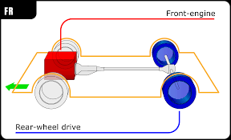
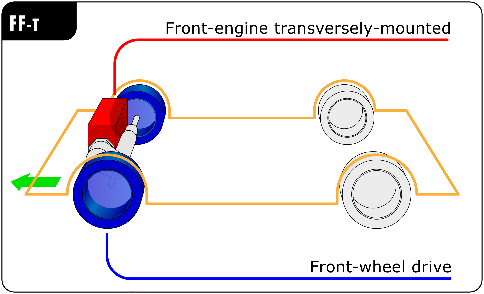

“Chassis” a French term which means the complete Automobiles without Body .
It includes all the systems like power plant, transmission, steering, suspension, wheels tyres, auto electric system etc. without body.
Engine
Frame
Axel
Suspension system
Wheels
Clutch
Gear-Box
Propeller Shaft
Universal Joint
Differential
Engine is at front of vehicle and driven wheels are located at the rear .
First power transfer from Engine -> Clutch -> Gearbox
Gearbox will slow down the speed and increase the torque. Again power transfers to the propller shaft and enters in differential .
Differential also slow down the speed and increase the torque and transfer it to the wheels. So that wheels start rotating .
Engine, clutch and gearbox is at back side of vehicle and driven wheels are also located at the rear .
In these type of layout more than 50% of the weight is on the rear axle.The necessity of the propeller shaft is completely eliminated.
Disadvantage: At high speed, relatively high proportions of weight at the rear axle will make the car unstable at speed. There is a strong tendency for the vehicle to oversteer.
Engine and transaxle unit is at front of vehicle and driven wheels are also at the front position .
Transaxle unit consist of clutch, gearbox and differential . It directly connected with the front axle .
The propeller shaft length is reduced or neglects the propeller shaft Good grip with road surface due to engine weight at front.
Power required for the cooling is reduced. When the vehicle is to be ‘steer in’ to the curve, it provide ‘under-steer’ characteristics, which is always preferred.
In Front engine four wheel drive, Transfer case provides facility two choose whether we want to connect front axle or not that will be controlled by switch in driver's compartment .
But in All wheel drive, both front and rear axles are connected to the transfer case .
Advantages: Traction is nearly doubled compared to a two-wheel drive layout.
Disadvantages :The manufacturing cost of the vehicle is high. More components and complicate transmission.
This type of layout places the engine between the two axles and the rear wheels are driven. Weight is equally distributed between front and rear wheels.
This layout is typically chosen for its low moment of inertia and relatively favourable weight distribution .
Advantages: Good acceleration because of back weight transfer. Efficient braking.
Disadvantages: When accelerating some steering is lost. Require more space.
These vehicles having a detachable trailer supported on a platform on the tractor unit are used to carry heavy loads which must not exceed gross train weight .
The trailer tractor connection is also called the fifth wheel. It maximum permitted laden length and weight is 15 meters and 20 tonnes or less than four wheel vehicle.
Advantages: Good acceleration because of back weight transfer. Efficient braking.
No time will be waste in loading or unloading as several trailers are available.
These heavy and robust vehicles used for haulage purpose are powered by a diesel engine .
Its gross vehicle weight (g.v.w.) is more than 3 tones. It required twin tyres fitted side by side on the rear wheels for carrying heavy loads .
Sometimes, more axles are added for very heavy loads. All the power and transmission components are arranged in a driver compartment.